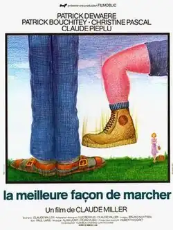

The Best Way to Walk
| The Best Way to Walk | |
|---|---|
 Theatrical release poster | |
| Directed by | Claude Miller |
| Written by | Luc Béraud Claude Miller |
| Produced by | Mag Bodard Jean-François Davy |
| Starring | Patrick Dewaere Patrick Bouchitey Christine Pascal Claude Piéplu |
| Cinematography | Bruno Nuytten |
| Edited by | Jean-Bernard Bonis |
| Music by | Alain Jomy |
| Distributed by | AMLF |
Release dates |
|
Running time | 82 minutes |
| Country | France |
| Language | French |
| Box office | $13,793[1] (2008 French reissue) |
The Best Way to Walk (French: La meilleure façon de marcher) is a 1976 French film directed by Claude Miller, his directorial debut. It stars Patrick Dewaere, Patrick Bouchitey, Christine Pascal, Claude Piéplu and Michel Blanc.[2]
Plot
Marc and Philippe are two teenage counselors at a summer vacation camp in the French countryside in 1960. Marc is very virile, while Philippe is more reserved. One night, Marc surprises Philippe dressed and made-up like a woman. He responds by continually humiliating Philippe. Despite their late-adolescent rivalries and sexual confusion, each achieves an awakening.
Awards
The film won the César Award for Best Cinematography, and was nominated for Best Film, Best Actor, Best Director, Best Screenplay, Dialogue or Adaptation and Best Sound.
Cast
- Patrick Dewaere as Marc
- Patrick Bouchitey as Philippe
- Christine Pascal as Chantal
- Claude Piéplu as Camp director
- Marc Chapiteau as Gérard
- Michel Blanc as Raoul Deloux
- Michel Such as Léni
- Franck d'Ascanio as Hervé
- Nathan Miller as kid with glasses
References
- ^ "The Best Way to Walk".
- ^ "The Best Way to Walk". unifrance.org. Retrieved 2014-03-10.
External links